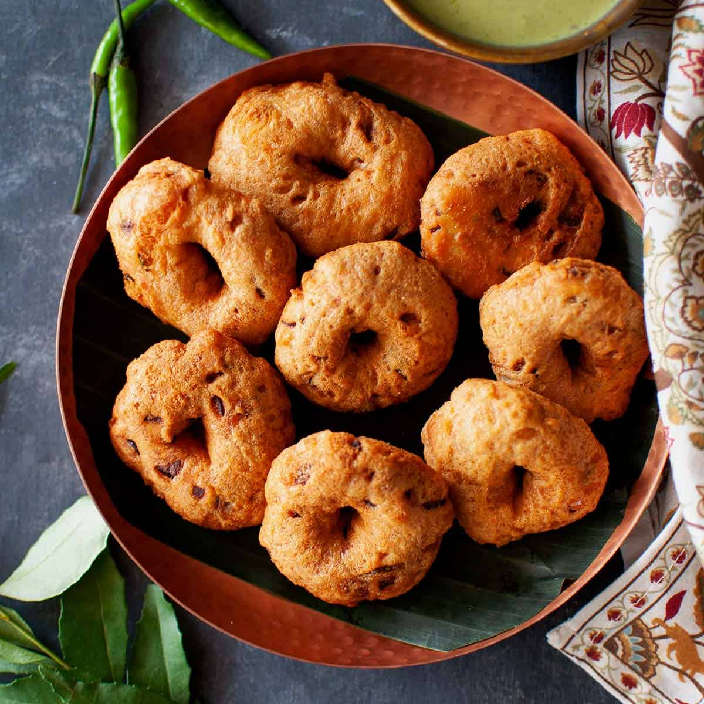

Medu vada is an Indian snack that is visually similar to a doughnut, consisting of a deep-fried batter made from black lentils and seasonings such as fenugreek, cumin, pepper, chili, and ginger. The fritters are often served for breakfast with coconut chutney and sambar on the side.
Meal prep time : 4 hours
Servings : 14